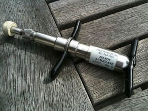

Veterinary Orthopedic Manipulation (VOM)
Back and neck problems are very common. Whether in people, dogs, cats or other species, problems like these aren’t always recognized to be the cause of your pet’s chronic pain.
Veterinary orthopedic manipulation (VOM) is similar to Chiropractic care and can offer solutions for visible improvement in their overall health and well-being.
All patients are fully examined and offered veterinary orthopedic manipulation if needed, as part of Dr. Jyl’s holistic approach to veterinary medicine.
If deemed necessary, orthopedic manipulation (similar to a chiropractic adjustment) can be integrated with acupuncture, laser therapy and traditional Western veterinary treatment to provide your pets the best care possible.
The usual veterinary training unfortunately tends to overlook this large and needful area of veterinary practice. This is very sad, in view of how widespread the problems are and how distressing and disabling back pain can be. It can be a serious welfare issue. As a holistic vet, Dr. Jyl cannot neglect this vital area. Animals that have been successfully manipulated demonstrate their relief and pleasure almost immediately, even in cases where the back pain prior to manipulation had not been at all apparent to casual observation. This is a great source of motivation and job satisfaction and her work as a orthopedic manipulation vet is perhaps one of the most rewarding aspects of her veterinary practice.
Dr. Jyl discusses Veterinary Orthopedic Manipulation with FOX40:
We have a particular interest in back problems and treatment in animals, frequently being called upon to treat dog back problems, cat back problems, and more. Manipulation, Acupuncture and LASER therapy are employed to seek resolution of such problems. These methodologies appear to offer a realistic alternative to the more usual approach of conventional medicine, in which the help of drugs such as NSAIDs or steroid (cortisone) injections may be sought.
How do I know when my dog needs an adjustment?
- Yelping in pain after a sudden movement when no other symptoms are present
- Weak front legs with no site of pain
- Dryness of the eyes for an extended period of time
- Looking, yelping or biting when being picked up around the chest area
- Hunched back
- Muscle spasms along the back
- Hip pain in the hind legs with no sign of canine arthritis
- Trouble standing or laying down
- Inability to jump
- Improper or reduced movement within a joint can cause a variety of symptoms from very mild to very severe. The most common of which is PAIN. Dogs in pain will compensate in gait or posture and often refuse to perform certain tasks.
The following article provides great insight into a pet owner’s first orthopedic manipulation experience:
http://www.vomtech.com/whatis.htm
Animals recover for the most part much quicker then people. There is no chattering mind that gets in the way of healing. Animals either get better or they don’t. They do not understand the possibility of placebo.
With manipulative care, animals can recover from many types of conditions at an incredible speed. Orthopedic adjustment clears the central nervous system of tensions that build up energetically and physically and the rest is up to the body. Orthopedic care does not really address conditions, but the cause of the condition.
The second reason this is interesting is that this same speed of recovery must reside inside humans as well…we just do not seem to access it as well as animals do. It is obvious to most owners as well as Dr. Jyl and her staff that the animals love getting adjusted. Most dogs know where they are when they pull up to the office!
Dr. Jyl Rubin DVM (916) 989-0738

Dr. Jyl's Veterinary Hospital and Mobile Veterinary Service
Her attention is always focused on you and your pets needs
Dr. Jyl Rubin DVM (916) 989-0738
7438 Cardwell Avenue, Orangevale, California 95662
Copyright © 2022, all rights reserved.
Lori's Web Design
Hours
| Monday-Thursday: | 9AM-6PM | (all new client/patient consultation appointment times are scheduled between 10am-2pm Technician appointments only) |
| Friday: | Closed | |
| Saturday: | 9AM-2PM | Boarding & Prescription PickUp & Drop off & Technician appointments only |
| Sunday: | Closed |
NOTICE for Mobile Vet Visits
We are still accepting clients in our office, however, we are temporarily not accepting any new mobile vet visits at this time. In the meantime, please contact other available mobile vets listed on our contact page.